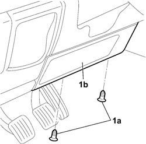
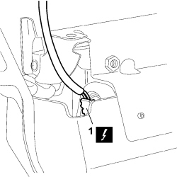
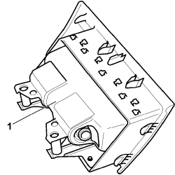

5580C23 DRIVE SIDE KNEE PROTECTION AIR BAG MODULE R. R.
- Path
- Procedures > 55 ELECTRICAL EQUIPMENT > 5580 SPECIAL ACCESSORIES > 5580C AIR BAG SYSTEM > 5580C23 DRIVE SIDE KNEE PROTECTION AIR BAG MODULE R. R.
- Kind
- repair procedure (removal / refitting; the operation number is the code)
- Applies to
- all engines; all production periods
- Interactive page
- https://sloeber94.github.io/elrnDB-fCrm/en/#/194000806
Applies to: all engines; all production periods
- Turn the ignition key to the OFF position and extract it.
- Disconnect the negative and positive battery terminals and insulate them.
- Wait for 10 minutes before continuing.
Description | Connector | |
|---|---|---|
BATTERY |
Applies to: all engines; all production periods
 Removing
Removing
 Refitting
Refitting1. Working from inside the vehicle, unscrew bolts (1a) securing the air bag module (1b).

Applies to: all engines; all production periods
1. Partly remove the air bag module and disconnect the electrical connection.
Description | Connector | |
|---|---|---|
1 | DRIVER'S KNEE AIR BAG |

Applies to: all engines; all production periods
1. Remove the Air Bag module from the vehicle and place it in the special cabinet resting it on a free surface with the bag facing upwards.

Applies to: all engines; all production periods
Refitting
RemovingObserve the following precautions:
- Connect the electrical connection.
Description | Connector | |
|---|---|---|
DRIVER'S KNEE AIR BAG |
- Position the air bag module for knee protection in its seat, screw in the bolts and tighten to the specified torque.
Component | Fastening | dia | Value (daNm) | Validity |
|---|---|---|---|---|
HEAD BAG RETAINING BAND TO BODYSHELL | Bolt | M6 | 0,64 ÷ 0,96 |
- Connect the negative and positive battery terminals.
Description | Connector | |
|---|---|---|
BATTERY |
- Check the operation of the system using the Examiner.
Topics linked from this page (3)
Topics that link to this page (29)
- 1820B20 MASTER CYLINDER (PUMP) - R + R
- 1820B21 MASTER CYLINDER (PUMP) - R R FOR RIGHT HAND DRIVE VERSIONS
- 2125C30 GEAR ENGAGEMENT/SELECTION CABLES - R.R
- 2125C32 GEAR CONTROL LEVER MOUNT - R R
- 2135A10 AUTOMATIC TRANSMISSION MANUAL CONTROL LEVER AND SUPPORT - R + R AND OVERHAUL
- 2135A12 GEAR ENGAGEMENT CABLE - R R
- 3330B02 PEDAL ASSEMBLY - R.R
- 3330B08 PEDAL MOUNT ASSEMBLY - R R AND OVERHAUL WITH FACIA TRIM SUPPORT BEAM REMOVED FOR RIGHT-HAND DRIVE VERSIONS
- 3330B22 BRAKE PEDAL - R+R FOR MANUAL GEARBOX VERSIONS
- 3330B26 CLUTCH PEDAL - R+R
- 3330B38 PEDAL UNIT MOUNT - R.R.
- 3330D02 BRAKE SERVO/BRAKE PUMP ASSEMBLY - R.R.
- 4110A30 SUPPORT WITH STEERING CONTROL SHAFTS - R+R
- 5010B47 SIDE AIR DUCT TO REAR SEATS (ONE), LH OR RH - R.R.
- 5040C10 AIR CONDITIONING CASING - R.R
- 5040C50 AIR CONDITIONING HEATER RADIATOR - R.R.
- 5040C64 A/C EVAPORATOR - R+R
- 5040D80 AIR CONDITIONER SYSTEM WIRING BUNDLE - R R OR REPLACE
- 5040D94 AIR CONDITIONING LEFT UPPER AIR DISTRIBUTION FLAP MOTOR (DEFROST) - R.R
- 5505C10 FRONT CROSSMEMBER WIRING - R.R
- 5505C31 BUILT-IN WIRING UNDER DASHBOARD - R.R.
- 5505C41 PASSENGER COMPARTMENT WIRING - R.R
- 5580E17 STEERING LOCK - R.R
- 7040A10 DASHBOARD TRIM - R+R
- 7040A30 LEFT LOWER DASHBOARD TRIM - R.R.
- 7040A60 UNDERDASHBOARD TRIM - R.R.
- 7040A97 INSTRUMENT PANEL TRIM SUPPORTING CROSSMEMBER - R.R
- 7040L17 PASSENGER COMPARTMENT FLOOR FRONT CARPET - R.R.
- 7095E22 SOUND-PROOF PANEL UNDER DASHBOARD SUPPORTING CROSSMEMBER - R.R.